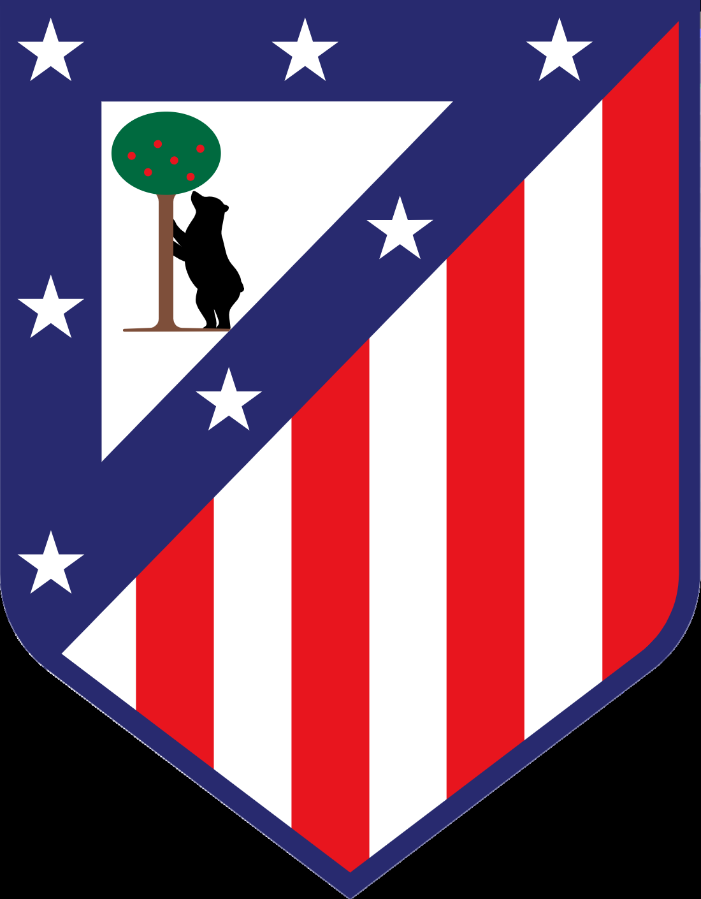

Destinatario: Tecnología de la Información
Controles, arquitectura y residuales para evaluación Atleti Lab — Atlético de Madrid. Sin precios ni oferta comercial vinculante.
CSP, HSTS, X-Frame-Options DENY, nosniff, COOP, CORP, Permissions-Policy · next.config.js
Sin sesión → login o 401 en APIs · Registro cerrado · Crons con Bearer CRON_SECRET · middleware.ts
Flujo authenticate → authorize → assertUserBelongsToTeam · Librería src/lib/security/
PostgreSQL / Supabase aísla por equipo · Anon key no salta RLS · Migraciones 002+ / 020
Next.js, APIs, autenticación, autorización por equipo, RLS Supabase, cabeceras HTTP, rate limiting Upstash y configuración Vercel Production (agosto 2026).
Red corporativa del club, cuentas personales, laboratorio de pentest de terceros, certificación ISO/SOC 2, auditoría física de instalaciones.
0121a98702 · Controles implementados
| Control | Estado | Evidencia |
|---|---|---|
| Middleware de sesión (páginas + APIs) | HECHO | src/middleware.ts |
| Auth unificada authenticate / authorize | HECHO | src/lib/security/auth.ts |
| Anti-IDOR por pertenencia a equipo | HECHO | APIs críticas + warehouse / stock / medical / trips / laundry |
| RLS PostgreSQL por equipo | HECHO | Migraciones Supabase 002+ / 020 |
| Rate limit login distribuido (Upstash Redis) | HECHO | login-rate-limit.ts + env Vercel |
| Cookies httpOnly (sin JWT en JSON login) | HECHO | POST /api/auth/login |
| Passkeys / WebAuthn | HECHO | API webauthn + migraciones |
| Política de contraseña (≥10, letras y números) | HECHO | password-policy.ts |
| Anti open-redirect | HECHO | safe-redirect.ts |
| Validación Zod (anti mass-assignment) | HECHO | POST inventario |
| Cabeceras HTTP (CSP, HSTS, XFO, COOP/CORP…) | HECHO | next.config.js |
| Fail-fast variables críticas en Production | HECHO | instrumentation.ts + env.ts |
| DEMO_MODE=false + hard-stop Vercel Production | HECHO | Vercel + app-mode.ts |
| Cron con Bearer CRON_SECRET | HECHO | isCronAuthorized |
| Audit log / triggers sensibles | HECHO | Tabla audit_log |
03 · Residuales y validación
| Ítem | Riesgo | Nota para TI |
|---|---|---|
| SSO corporativo (Microsoft Entra ID / Azure AD) | MEDIO | Exigencia habitual de TI de club grande; no bloquea piloto con cuentas Supabase. |
| WAF perimetral (Cloudflare / Vercel Firewall) | BAJO–MEDIO | Capa extra ante bots; el rate limit de login ya mitiga fuerza bruta. |
CSP sin unsafe-eval |
BAJO | Nota típica en informes; ligado al runtime de Next.js. |
| Checklists localStorage → base de datos | BAJO | Integridad multi-dispositivo; no es bypass de autenticación. |
| Pentest externo formal + informe firmado | PROCESO | Evidencia contractual; el producto ya está preparado para la prueba. |
| ISO 27001 / SOC 2 | FUERA DE ALCANCE | Programa de compliance aparte (meses + auditor externo). |
| Prueba | Resultado esperado |
|---|---|
| API de datos sin cookie de sesión | 401 Unauthorized |
Sesión válida + team_id de otro club | 403 (capa app) y/o vacío por RLS |
| Fuerza bruta en login (más del límite) | 429; contador compartido vía Redis/Upstash |
| Cuerpo JSON del login | Sin access_token / refresh_token |
?redirect=//evil.com tras login | Solo rutas internas permitidas |
| Clickjacking (iframe) | Bloqueado (XFO + CSP frame-ancestors) |
/api/ai/ping?secret= en query | 401 (solo cabecera secreta) |
| Passwords mock en bundle de producción | No deben aparecer |
04 · Operación y recomendaciones
NEXT_PUBLIC_DEMO_MODE=falseUPSTASH_REDIS_REST_URL / TOKENCRON_SECRET obligatorioNEXT_PUBLIC_DEMO_MODE=true (demos)Piloto / operación controlada del club con los controles ya desplegados en Production.
Planificar Microsoft Entra ID / Azure AD como fase 2 de identidad corporativa.
Pentest externo en staging (caja gris) + este informe como anexo técnico.
WAF (Cloudflare / Vercel Firewall) · mantener DEMO_MODE=false y secretos rotados.